測定対象に接することなく計測ができる画期的な測定器
非接触分光光度計VeriColor Spectro
もっと精度高く、
もっと目視検査作業が楽になりませんか。
抜き取りせずに生産中の製造ラインでも
製品のカラー測定は可能でしょうか。。。
-
液体のカラー測定
を行いたい -
粉体のサンプルに
直接測定したい -
測定サンプルを
綺麗な状態に保ちたい
-
省人化のため
自動測定したい -
非接触で分光反射
や色彩データが欲しい -
人による誤差を避け、
数値化したい
非接触分光測色計 VeriColor Spectro なら
すべて解決できます！
Feature
商品特長
セットアップと管理が非常に簡単！
早期の問題検出と対策が可能
-

特別な仕組みが不要、簡単設定
-
色彩管理をオンタイムでチェック
-
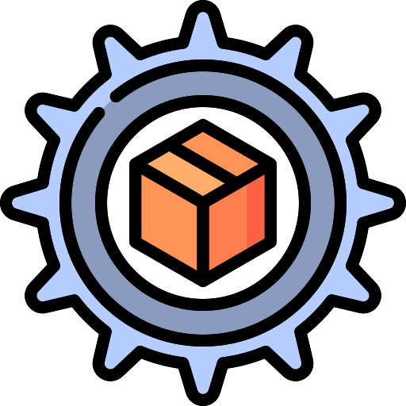
品質管理の省人化向上
-
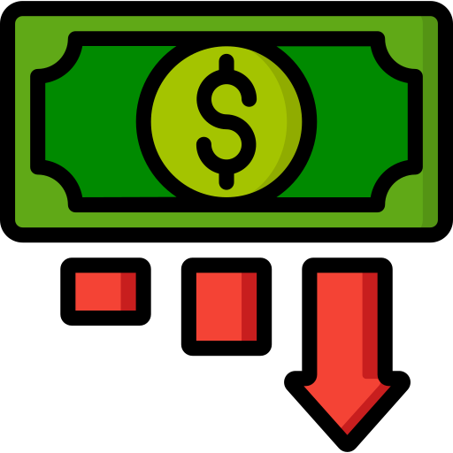
不良によるコスト削減
-

分光データから色を数値化
-
繰り返し精度平均△E0.03
- POINT01
セットアップが簡単 - POINT02
カラー管理が簡単 - POINT03
幅広い業界に対応
セットアップが簡単
機器とPCを接続後、電源ケーブルを接続するだけで準備OK！
カラー管理が簡単
専用ソフトウェアはシンプル操作。測定画面では基準色の登録、Lab情報、色差(ΔE)を表示し.txtデータとして出力可能。設定では測定間隔、平均測定回数の設定が可能。
幅広い業界に対応
化粧製品、壁紙、食品、塗料など様々なシチュエーションに対応可能！
Color Management
非接触で測定するメリット
MERIT 01
付着による汚染が無いので、液体や乾燥していないペンキ、生乾き状態の粉体も測定可能！
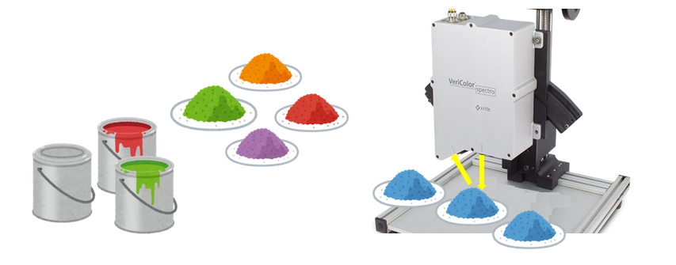MERIT 02
ラインで搬送される物でも抜き取り検査をすることなく測定可能！
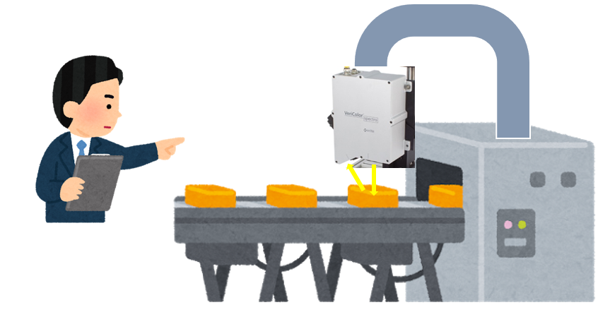MERIT 03
触れる事ができないものでも測定可能！
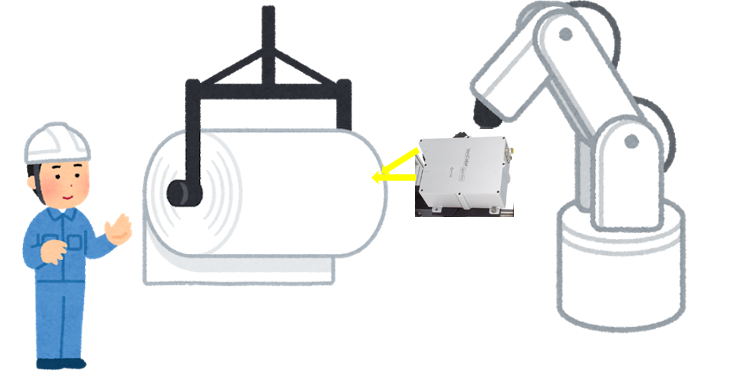
Examples
活用イメージ
食品メーカー
目視で色を確認し添加剤を入れるため人による誤差を減らせないか考えていた。 自動でLabデータを出すことができるので、目標値を決めて判別する仕組みと作ることで省人化できた。
化粧製品
生産ラインに流れた製品のわずかな色差をラインを止めないで測定できるものを探していた。 データを取ることで変色の経過も観測できた。
塗料
乾燥前後の色評価の相関を取ってみたいが接触すると付着してしまうため困っていた。 非接触でも評価ができたので満足している。
-
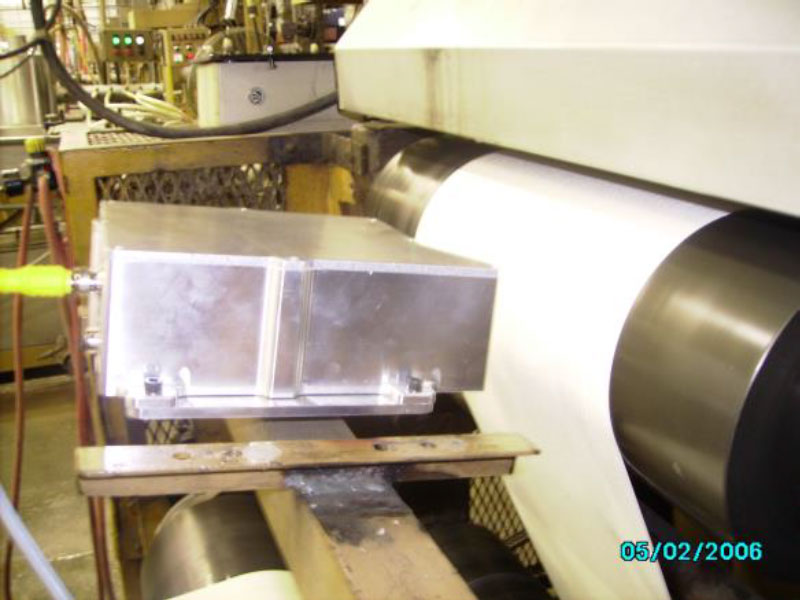
ロール面で測定
-
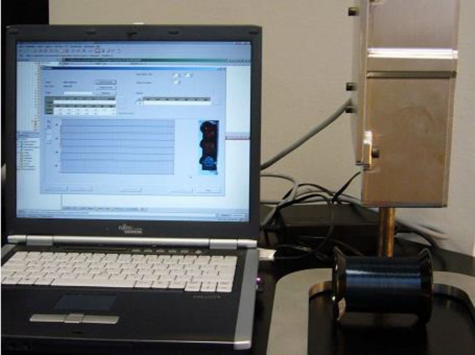
ロール面で測定 ??
-
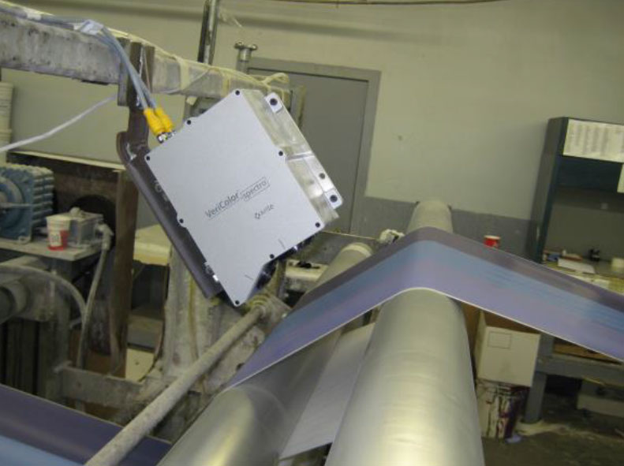
ロール間で測定
-
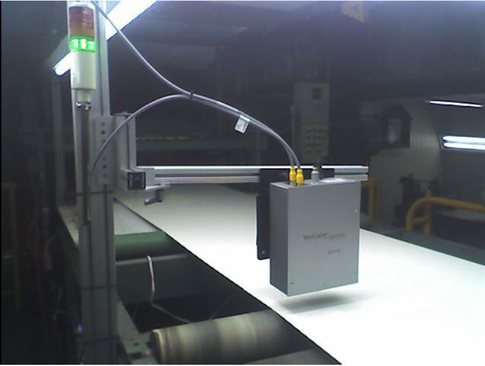
コイルコーティング
-
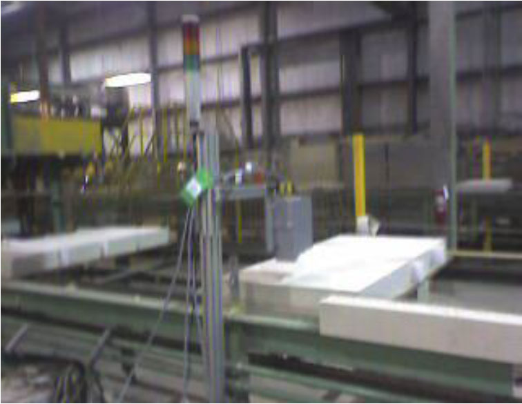
壁紙 ??
-
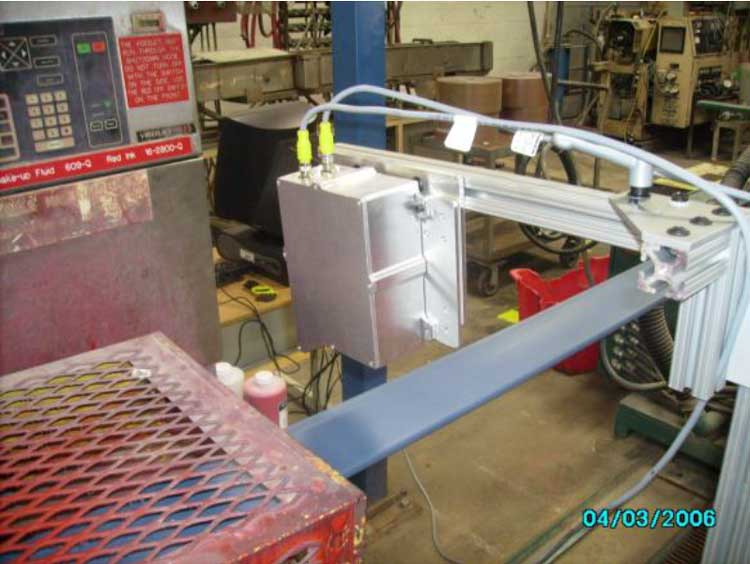
鋼板
-
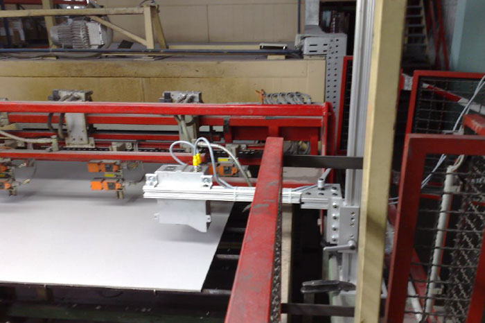
鋼板
-
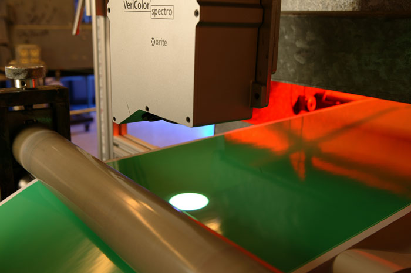
塗料
-
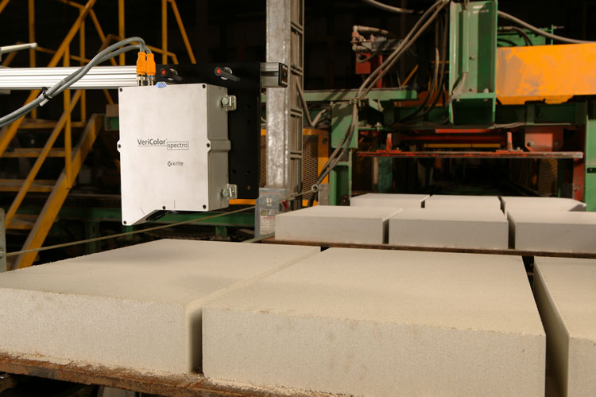
石板
Flow
ご相談の流れ
たった 4ステップ
Web上にお問い合せ
測定物、色、形状など状況を詳しくお伺い致します。
TEL:
03-6374-8734
Email:
info@xrite.co.jp
または、
商品デモ（無料貸出）
製品操作説明会をして実際にご評価ください。
ソリューション提案
測定結果をもとに最善の方法を一緒に考え提案します。
見積・発注・ご購入後のサポート
ご購入後はメールまたは電話でサポートしたします。納期についてもご相談ください。
Q&A
よくあるご質問
hello.world!
hello.world!
hello.world!
hello.world!
hello.world!